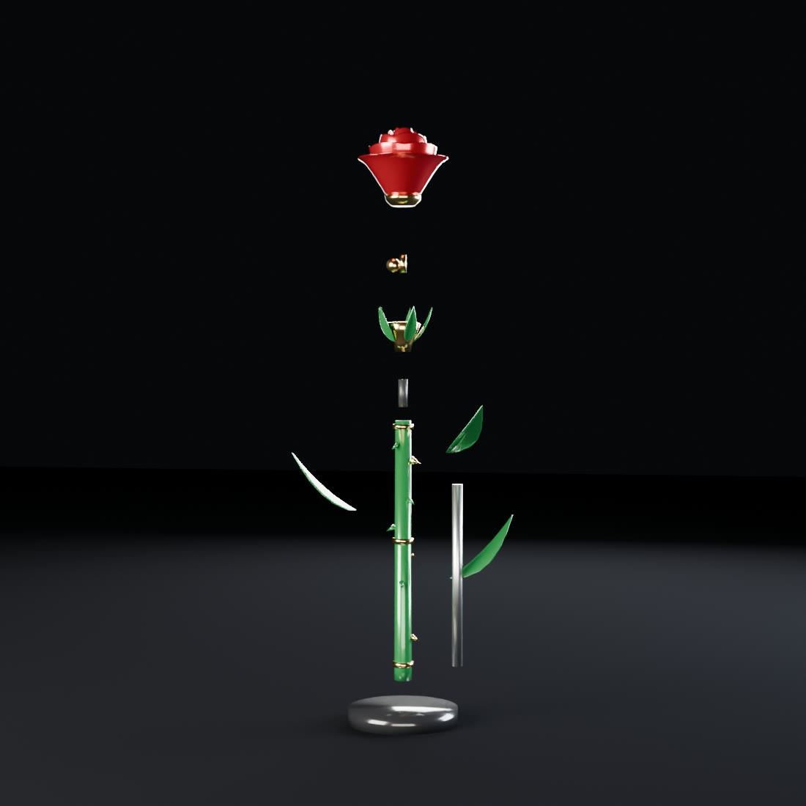
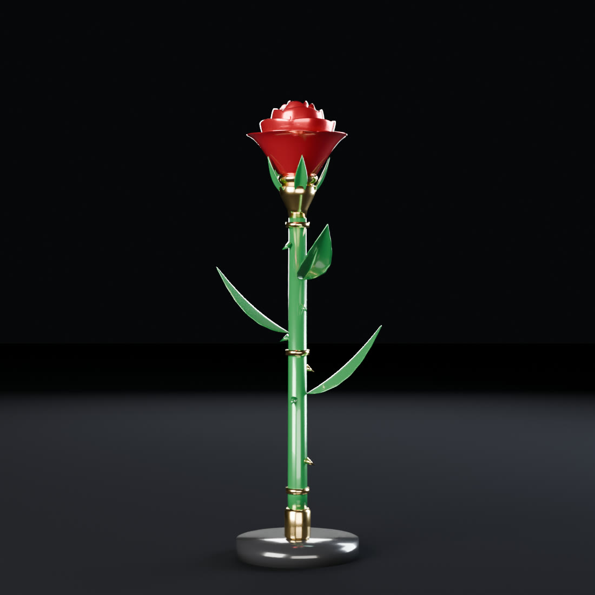
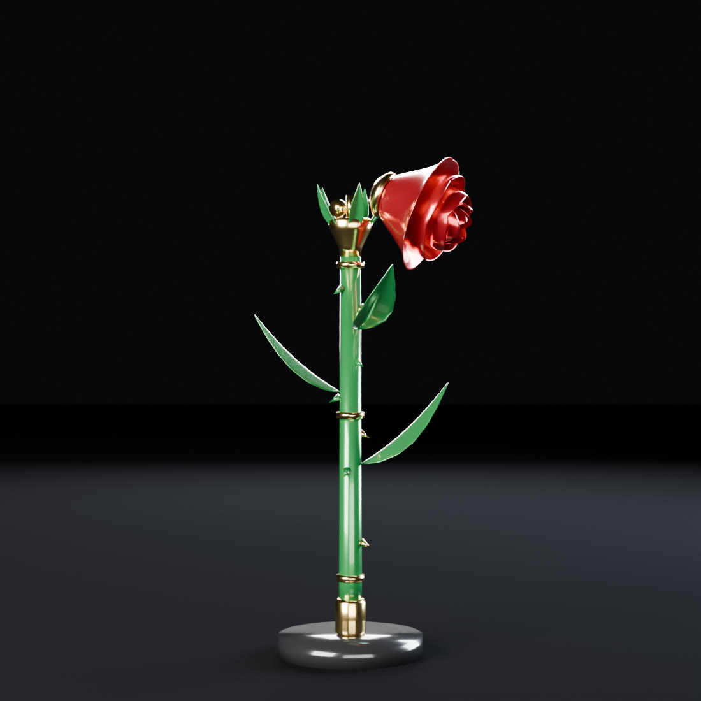
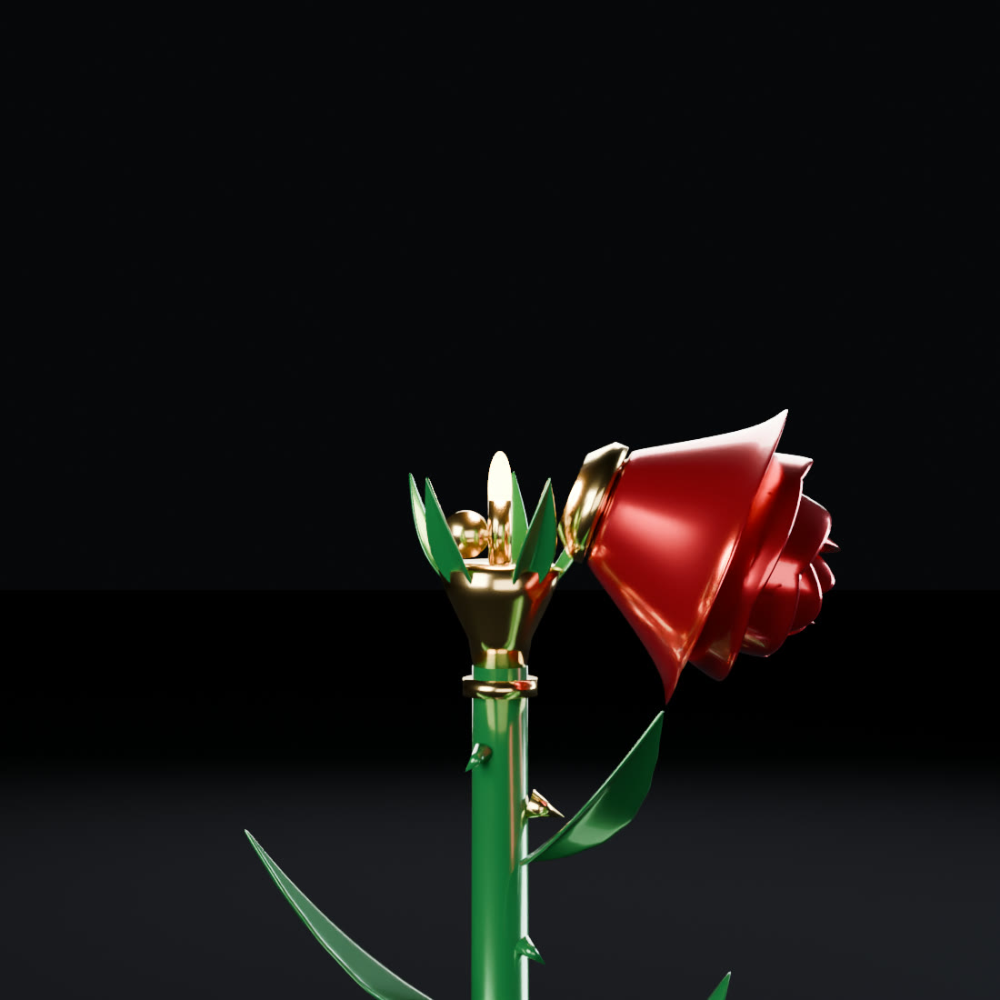
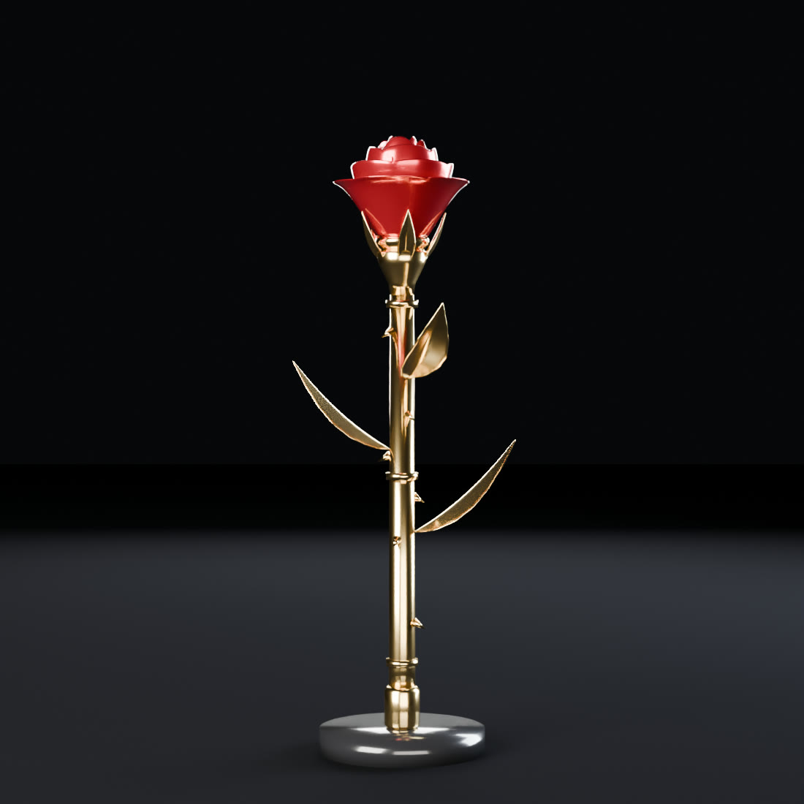
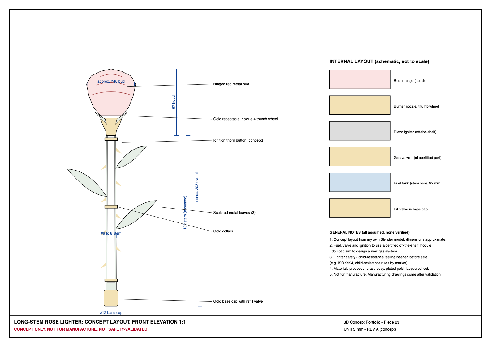

Long-Stem Rose Lighter: interactive concept study
A luxury collectible rose lighter: realistic metallic red bud on a hinge, long slender stem, sculpted leaves, thorn details and gold or green accents. Turn it, flip the bud open, light it, switch colourway, then see the mechanism layout, exploded view and a concept sheet.
Please read: this is a concept study I built on my own from the public job post, before seeing your concept images, so it will not match them. It is a Blender sculpt with pre-rendered views, not parametric CAD, and not a safety-validated lighter. It does not design a gas system: fuel, valve and ignition would use a certified off-the-shelf module, and any real lighter needs safety and child-resistance testing before sale. All dimensions are approximate.
Drag left and right (or swipe) to rotate 360°. Lit view is shown in the green colourway only.
How the concept works
- Lift the rose. The red bud is a hinged head. It swings off the centre line to reveal the gold receptacle, burner nozzle and thumb wheel.
- Press the gold thorn. One thorn on the upper stem is the ignition button. It drives a piezo igniter module and opens the gas valve (concept).
- Light. Gas from the fuel tank in the stem reaches the nozzle and the spark lights it.
- Close. Lower the bud, the flame goes out, and the rose sits closed like a collectible.
- Refill. A refill valve in the gold base cap, subject to engineering and safety feasibility.
The valve, jet and igniter would be certified off-the-shelf modules chosen with a manufacturer. I would design the housing, hinge, button and finish around them.
Exploded view and stills






Download STL (concept model, mm) · Concept sheet PDF
Design intent
| Element | Concept |
|---|---|
| Bud | Five layers of hand-sculpted petals (about 20) in red lacquered metal, scalloped edges, rolled outer petals. Target process to be agreed: lost-wax cast brass or zinc, or formed sheet, then plated and lacquered. |
| Stem | About 132 mm slender tube (Ø9 to 8), brass or stainless, with three gold collars, doubling as the fuel reservoir bore. |
| Leaves and thorns | Three sculpted leaves with a folded centre vein and fine serration; a dozen small thorns, one of them the ignition button. |
| Finish | Gold plating accents; red lacquer or enamel; green enamel for the stem and leaves (or all gold as an alternative colourway). |
| Presentation | Shown on a black display stand; a retail gift tube or box would be designed in refinement. |
| Overall size | About 203 mm tall including bud (assumed; to be set from your brief and ergonomics). |
Safety and feasibility (what I would flag early)
- Refillable butane lighters are regulated products. Safety standards such as ISO 9994 and child-resistance requirements differ by market (for example in the US, EU and UK) and need testing by an accredited lab. I do not know your target markets yet.
- A 9 mm stem is tight for a tank, valve and igniter. Fuel volume, burn time and refill method need a quick feasibility check with a lighter-mechanism supplier before design is frozen.
- A long thin lighter changes how it is held and lit. Ergonomics and flame position relative to the petals need a physical test, not only CAD.
- The hinged bud must keep petals clear of the flame. I would check distances once the nozzle module is chosen.
What I would deliver, step by step
- Refinement: match your concept images, then 3D model options and colourways with renders.
- Validation first: a feasibility note with the supplier modules, internal layout and risks, before any manufacturing drawings.
- Files after validation: parametric 3D CAD of every part and the assembly (STEP and native), 2D manufacturing drawings (PDF/DXF) with tolerances and finishes, bill of materials, and STL for prototypes.
- Ownership: I am happy to sign a written agreement giving you full commercial ownership of the final design and source files.